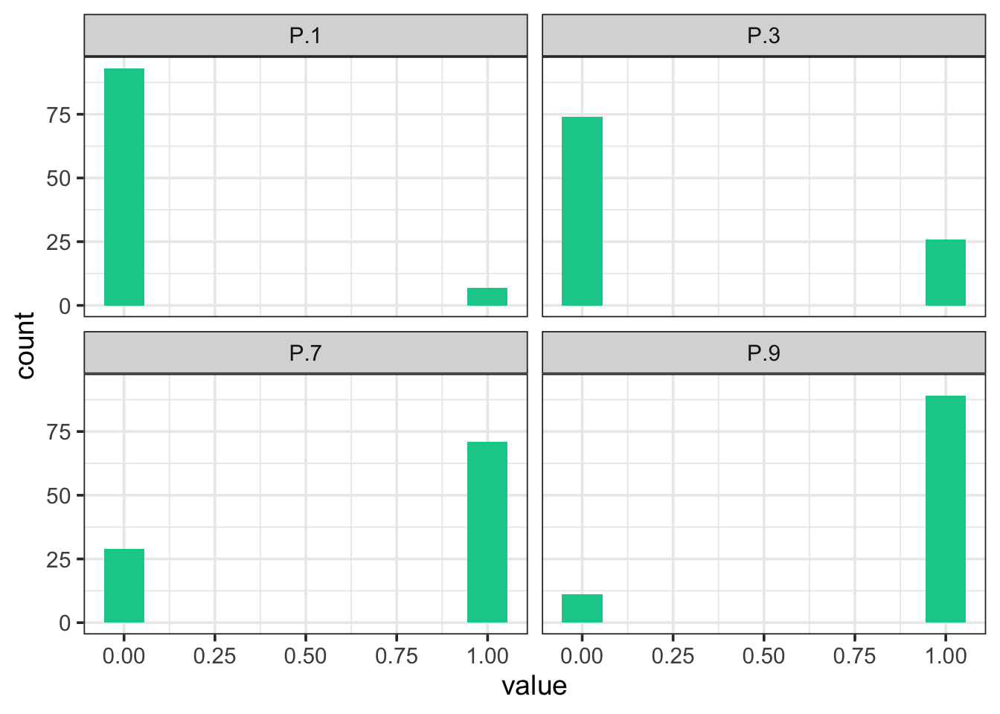
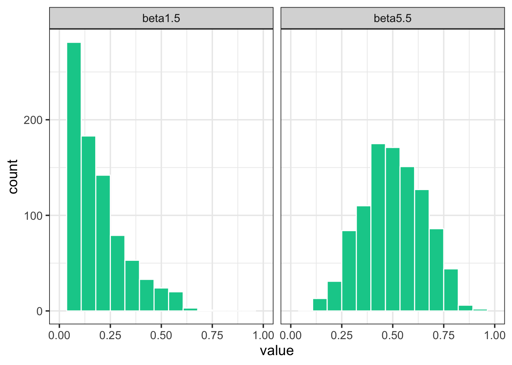
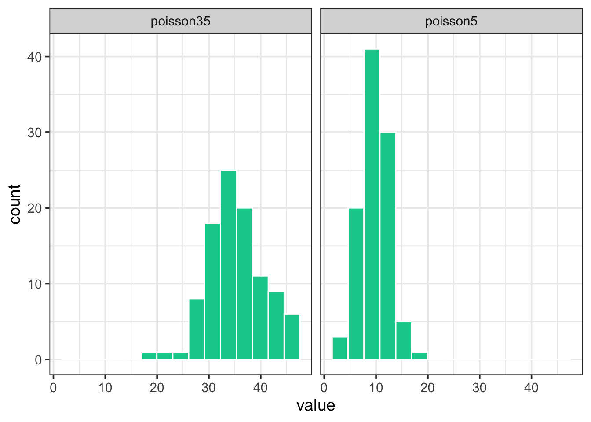
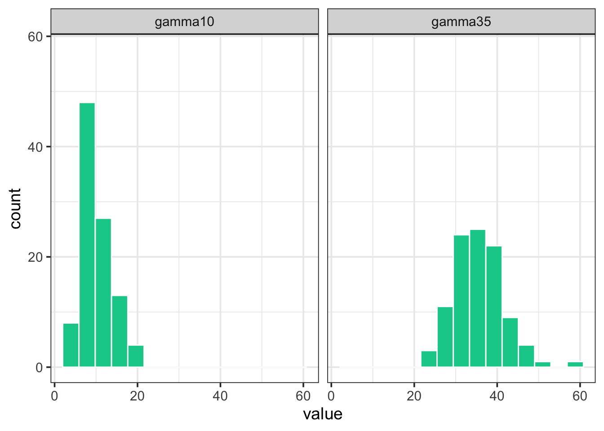
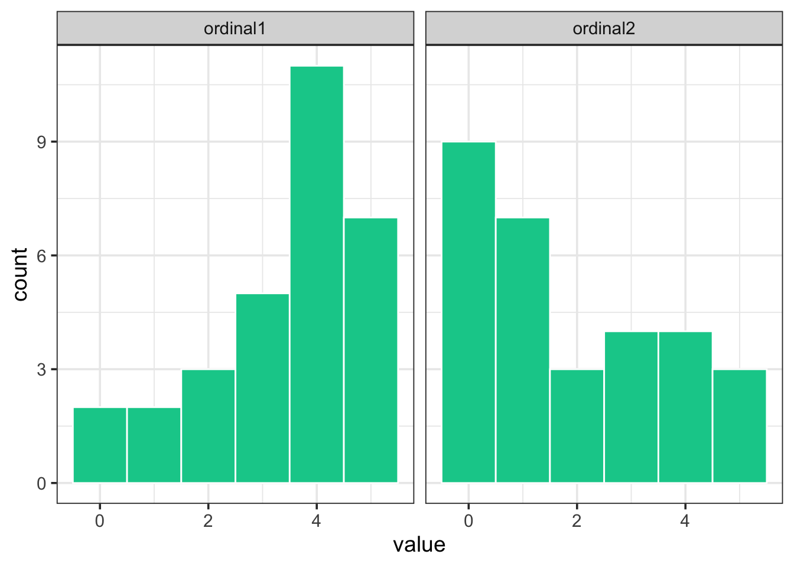

library(tidyverse)
theme_set(theme_bw(base_size = 14)) # set global theme
set.seed(123) # for reproducibility
P.1 <- rbinom(100, size = 1, prob = 0.1)
P.3 <- rbinom(100, size = 1, prob = 0.3)
P.7 <- rbinom(100, size = 1, prob = 0.7)
P.9 <- rbinom(100, size = 1, prob = 0.9)
binomial_data <- data.frame(P.1, P.3, P.7, P.9)Data types and simulation
This is a work in progress that is currently undergoing heavy technical editing and copy-editing
Data types
The data used to express disease as incidence or any kind of severity measures vary in their nature as they can be discrete or continuous.
Discrete variables are countable (involve integers) at a finite amount of time. That is, only a limited number of values (nominal or ordinal) is possible and these cannot be subdivided into parts. For example, a plant or plant part can be either disease or not diseased (nominal data). One can’t count 1.5 diseased plants. Also, a plant classified as diseased may exhibit a certain number of lesions (count data) or be classified into a specific class of severity (ordinal data, common in ordinal scales, e.g., 1-9). Disease data in the form of counts usually relate to the number of infections per sampling units. Most commonly, counts refer to the pathogen population that is assessed, such as number of airborne or soilborne propagules.
Continuous variables, different from discrete, can be measured on a scale and can have any numeric value between two numbers. For example, the size of a lesion on a plant can be measured at a very precise scale (cm or mm). An estimate of severity in percent scale (% diseased area) can take any value between non zero and 100%. Although discrete at the individual level, incidence at the sample level can be treated as continuous, as it can take any value in proportion or percentage.
The disease variables can also be described by a statistical distribution, which are models that give the probability that a particular value (or a range of values) will be drawn from a specific distribution. Knowledge about statistical or mathematical distributions constitute an important step to improve our understanding of data-collection methods, designs of experiments and data analysis such as data summarization or hypothesis testing.
Statistical distributions and simulation
Binomial distribution
For incidence (and prevalence), the data is binary at the individual level, as there are only two possible outcomes in a trial: the plant or plant part is disease or not diseased. The statistical distribution that best describe the incidence data at the individual level is the binomial distribution.
Let’s simulate the binomial outcomes for a range of probabilities in a sample of 100 units, using the rbinom() function in R. For a single trial (e.g., status of plants in a single plant row), the size argument is set to 1.
We can then visualize the plots.
binomial_data |>
pivot_longer(1:4, names_to = "P",
values_to = "value") |>
ggplot(aes(value)) +
geom_histogram(fill = "#00cc99",
bins = 10) +
facet_wrap( ~ P) 
Beta distribution
Disease incidence (or prevalence) at the sample or population level can be expressed as proportion of diseased individuals. The same applies to disease severity when expressed as proportion of the organ area affected (a ratio variable). For such cases, the beta distribution, which is bounded between 0 and 1, provides a good description. Let’s simulate some data using the rbeta() function.
beta1.5 <- rbeta(n = 1000, shape1 = 1, shape2 = 5)
beta5.5 <- rbeta(n = 1000, shape1 = 5, shape2 = 5)
beta_data <- data.frame(beta1.5, beta5.5)Notice that there are two shape parameters in the beta distribution: shape1 and shape2 to be defined. This makes the distribution very flexible and with different potential shapes as we can see below.
library(tidyverse)
theme_set(theme_bw(base_size = 14)) # set global theme
beta_data |>
pivot_longer(1:2, names_to = "P",
values_to = "value") |>
ggplot(aes(value)) +
geom_histogram(fill = "#00cc99",
color = "white",
bins = 15) +
scale_x_continuous(limits = c(0, 1)) +
facet_wrap(~ P) 
Beta-binomial distribution
The Beta-Binomial distribution is a mixture of the Binomial distribution with the Beta distribution acting as a prior on the probability parameter of the binomial. Disease probabilities can vary across trials due to a number of unobserved or unmeasured factors. This variability can result in overdispersion, a phenomenon where the observed variance in the data is greater than what the binomial distribution expects.
This is where the Beta-Binomial distribution comes in handy. By combining the Beta distribution’s flexibility in modeling probabilities with the Binomial distribution’s discrete event modeling, it provides an extra layer of variability to account for overdispersion. The Beta-Binomial distribution treats the probability of success (disease occurrence in this context) as a random variable itself, following a Beta distribution. This means the probability can vary from trial to trial.
Therefore, when we observe data that shows more variance than the Beta distribution can account for, or when we believe there are underlying factors causing variability in the probability of disease occurrence, the Beta-Binomial distribution is a more appropriate model. It captures both the variability in success probability as well as the occurrence of the discrete event (disease incidence).
When combined with the Binomial distribution, which handles discrete events (e.g. whether an individual is diseased or not), the Beta-Binomial distribution allows us to make probabilistic predictions about these events. For example, based on prior data (the Beta distribution), we can estimate the likelihood of a particular individual being diseased (the Binomial distribution).
In R, the rBetaBin function of the FlexReg package generates random values from the beta-binomial distribution. The arguments of the function are n, or the number of values to generate; if length(n) > 1, the length is taken to be the number required. size is he total number of trials. mu is the mean parameter. It must lie in (0, 1). theta is the overdispersion parameter. It must lie in (0, 1). phi the precision parameter. It is an alternative way to specify the theta parameter. It must be a positive real value.
library(FlexReg) betabin <- rBetaBin(n = 100, size = 40, mu = .5, theta = .4)
Poisson distribution
The number of diseased plants, plant parts or individual symptoms (lesions) are discrete variables (integers) which cannot take negative values. These can be described by a Poisson distribution, a discrete distribution that counts the number of events in a Poisson process. In R, we can used the rpois() function to obtain 100 random observations following a Poisson distribution. For such, we need to inform the number of observation (n = 100) and lambda, the vector of means.
poisson5 <- rpois(100, lambda = 10)
poisson35 <- rpois(100, lambda = 35)
poisson_data <- data.frame(poisson5, poisson35)poisson_data |>
pivot_longer(1:2, names_to = "P",
values_to = "value") |>
ggplot(aes(value)) +
geom_histogram(fill = "#00cc99",
color = "white",
bins = 15) +
facet_wrap( ~ P) 
Gamma distribution
When working with a continuous variables, such as lesion size, these random variables are usually described by the normal distribution. However, the problem is that the normal (Gaussian) distribution includes negative values, an unrealistic situation. Therefore, we can use the gamma distribution, which cannot take negative values, to simulate continuous plant disease data. We can use the rgamma() function that requires the number of samples (n = 100 in our case) and the shape, or the mean value.
gamma10 <- rgamma(n = 100, shape = 10, scale = 1)
gamma35 <- rgamma(n = 100, shape = 35, scale = 1)
gamma_data <- data.frame(gamma10, gamma35)gamma_data |>
pivot_longer(1:2, names_to = "P",
values_to = "value") |>
ggplot(aes(value)) +
geom_histogram(fill = "#00cc99",
color = "white",
bins = 15) +
ylim(0, max(gamma_data$gamma35)) +
facet_wrap( ~ P)
Simulating ordinal data
For ordinal data, such as a limited number of ranked-values in an ordinal scale (e.g. 0 to 5) we can use the sample() function and define the probability associated with each rank. Let’s generate 30 units with a distinct ordinal score. In the first situation, the higher probabilities (0.5) are for scores 4 and 5 and lower (0.1) for scores 0 and 1, and in the second situation is the converse.
ordinal1 <- sample(0:5, 30, replace = TRUE, prob = c(0.1, 0.1, 0.2, 0.2, 0.5, 0.5))
ordinal2 <- sample(0:5, 30, replace = TRUE, prob = c(0.5, 0.5, 0.2, 0.2, 0.1, 0.1))
ordinal_data <- data.frame(ordinal1, ordinal2)ordinal_data |>
pivot_longer(1:2, names_to = "P",
values_to = "value") |>
ggplot(aes(value)) +
geom_histogram(fill = "#00cc99",
color = "white",
bins = 6) +
facet_wrap( ~ P) 